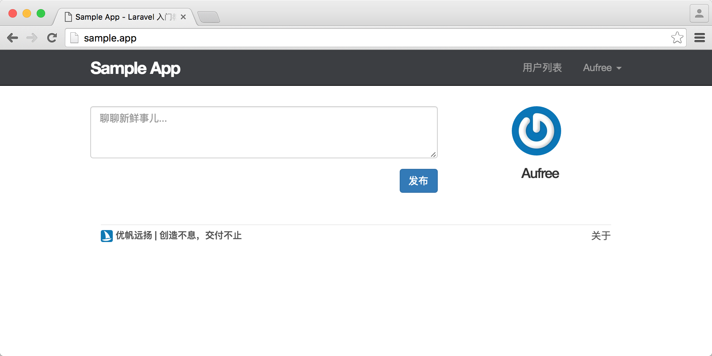
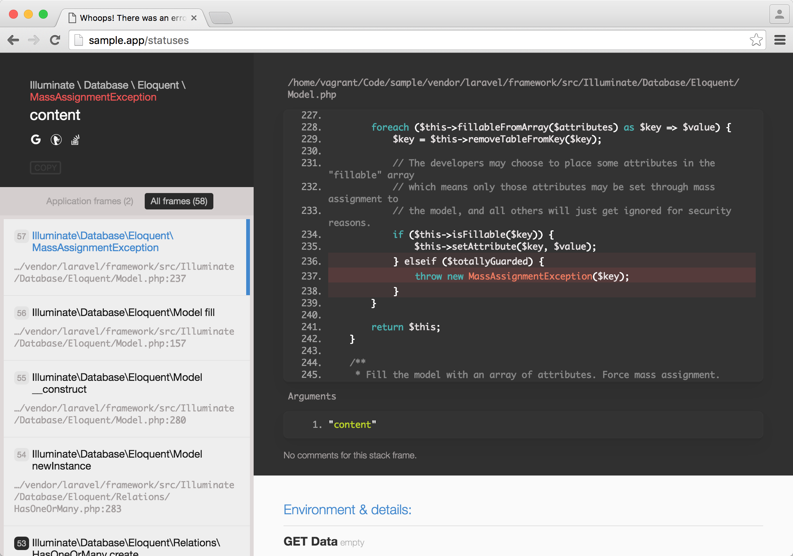
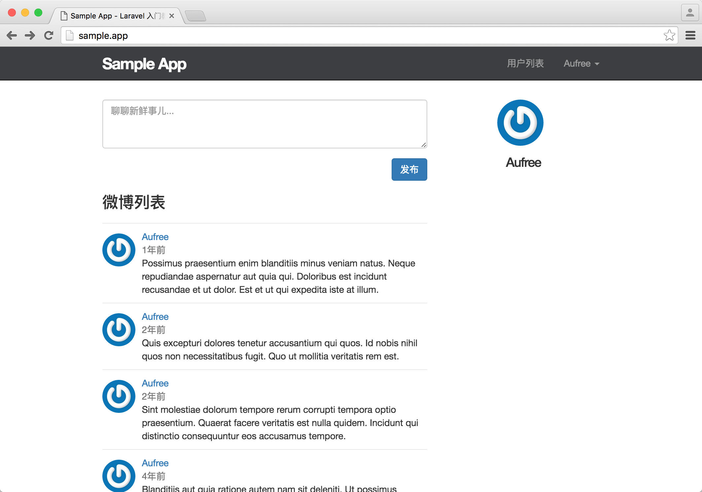
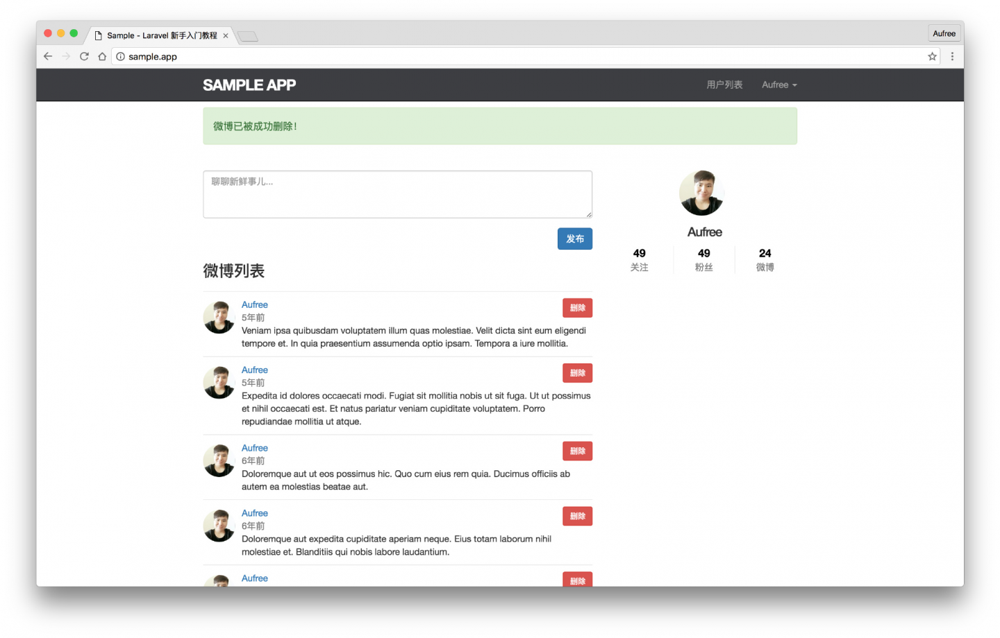

10.4. 微博相关的操作
微博相关的操作
现在微博列表已能够正常展示，接下来让我们来完成微博的创建和删除操作。
如果使用 resource 方法来定义微博路由，则会生成完整的符合 RESTful 架构的路由，但我们完成微博的创建和删除只需要两个动作，因此我们可以对 resource 传参 only 键指定只生成某几个动作的路由。
routes/web.php
<?php
.
.
.
Route::resource('statuses', 'StatusesController', ['only' => ['store', 'destroy']]);该路由列表信息如下所示：
| HTTP 请求 | URL | 动作 | 作用 |
|---|---|---|---|
| POST | /statuses | StatusesController@store | 处理创建创建微博的请求 |
| DELETE | /statuses | StatusesController@destroy | 处理删除微博的请求 |
访问限制
在路由定义完成之后，我们需要生成一个微博动态控制器来处理微博的创建和删除操作。
$ php artisan make:controller StatusesController由前面开发用户相关功能的经验可知，一些需要用户登录之后才能执行的请求需要通过中间件来过滤，接下来我们需要开发的 store 和 destroy 动作将用于对微博的创建和删除，这两个动作都需要用户登录，因此让我们借助 Auth 中间件来为这两个动作添加过滤请求。
app/Http/Controllers/StatusesController.php
<?php
namespace App\Http\Controllers;
use Illuminate\Http\Request;
use App\Http\Requests;
class StatusesController extends Controller
{
public function __construct()
{
$this->middleware('auth');
}
}创建微博
下面我们开始来完善创建微博的动作，首先我们要对微博的内容进行限制，一条微博的最长长度为 140 个字符，且内容不能为空，通过前面学习的知识，我们知道其验证规则将如下所示：
'content' => 'required|max:140'当我们在创建微博的时候，需要通过以下方式来进行创建。这样创建的微博会自动与用户进行关联。
$user->statuses()->create();因为创建微博的用户始终为当前用户，借助 Laravel 提供的 Auth::user() 方法我们可以获取到当前用户实例。在创建微博的时候，我们需要对微博的内容进行赋值，因此最终的创建方法如下：
Auth::user()->statuses()->create([
'content' => $request->content
]);由于我们接下来会在主页上同时显示微博发布表单和微博动态，因此在用户完成微博的创建之后，需要将其导向至上一次发出请求的页面，即网站主页，因此我们可以使用 back 方法来完成：
app/Http/Controllers/StatusesController.php
<?php
namespace App\Http\Controllers;
use Illuminate\Http\Request;
use App\Http\Requests;
use App\Models\Status;
use Auth;
class StatusesController extends Controller
{
public function __construct()
{
$this->middleware('auth');
}
public function store(Request $request)
{
$this->validate($request, [
'content' => 'required|max:140'
]);
Auth::user()->statuses()->create([
'content' => $request->content
]);
return redirect()->back();
}
}接下来让我们在主页上创建一个微博发布表单，让用户可以发布微博。对于微博表单我们还需要单独抽离成一个局部视图出来，保证代码的可维护性。
微博表单的页面结构如下所示：
resources/views/shared/_status_form.blade.php
<form action="{{ route('statuses.store') }}" method="POST">
@include('shared._errors')
{{ csrf_field() }}
<textarea class="form-control" rows="3" placeholder="聊聊新鲜事儿..." name="content">{{ old('content') }}</textarea>
<button type="submit" class="btn btn-primary pull-right">发布</button>
</form>为主页添加微博表单和当前用户个人信息。
resources/views/static_pages/home.blade.php
@extends('layouts.default')
@section('content')
@if (Auth::check())
<div class="row">
<div class="col-md-8">
<section class="status_form">
@include('shared._status_form')
</section>
</div>
<aside class="col-md-4">
<section class="user_info">
@include('shared._user_info', ['user' => Auth::user()])
</section>
</aside>
</div>
@else
<div class="jumbotron">
<h1>Hello Laravel</h1>
<p class="lead">
你现在所看到的是 <a href="https://laravel-china.org/laravel-tutorial/5.1">Laravel 入门教程</a> 的项目主页。
</p>
<p>
一切，将从这里开始。
</p>
<p>
<a class="btn btn-lg btn-success" href="{{ route('signup') }}" role="button">现在注册</a>
</p>
</div>
@endif
@stop
如果我们现在尝试发布一条微博，则会发现有如下报错。

我们看到其中的关键信息 MassAssignmentException - 批量赋值异常，这是因为我们未在微博模型中定义 fillable 属性，来指定在微博模型中可以进行正常更新的字段，Laravel 在尝试保护。解决的办法很简单，在微博模型的 fillable 属性中允许更新微博的 content 字段即可。
app/Models/Status.php
<?php
namespace App\Models;
use Illuminate\Database\Eloquent\Model;
class Status extends Model
{
protected $fillable = ['content'];
public function user()
{
return $this->belongsTo(User::class);
}
}动态流原型
现在网站主页已经拥有微博的发布表单和当前登录用户的个人信息展示了，接下来让我们接着完善该页面，在微博发布表单下面增加一个局部视图用于展示微博列表。在开始之前，我们需要在用户模型中定义一个 feed 方法，该方法将当前用户发布过的所有微博从数据库中取出，并根据创建时间来倒序排序。在后面我们为用户增加关注人的功能之后，将使用该方法来获取当前用户关注的人发布过的所有微博动态。现在的 feed 方法定义如下：
app/Models/User.php
<?php
namespace App\Models;
.
.
.
class User extends Authenticatable
{
.
.
.
public function feed()
{
return $this->statuses()
->orderBy('created_at', 'desc');
}
}由于我们在用户模型中已定义好了 feed 方法，因此我们可以在主页对应的控制器动作 home 中使用该方法来获取用户的微博动态。
app/Http/Controllers/StaticPagesController.php
<?php
namespace App\Http\Controllers;
use Illuminate\Http\Request;
use App\Http\Requests;
use App\Http\Controllers\Controller;
use App\Models\Status;
use Auth;
class StaticPagesController extends Controller
{
public function home()
{
$feed_items = [];
if (Auth::check()) {
$feed_items = Auth::user()->feed()->paginate(30);
}
return view('static_pages/home', compact('feed_items'));
}
public function help()
{
return view('static_pages/help');
}
public function about()
{
return view('static_pages/about');
}
}我们定义了一个空数组 feed_items 来保存微博动态数据。由于用户在访问首页时，可能存在登录或未登录两种状态，因此我们需要确保当前用户已进行登录时才从数据库读取数据。前面章节我们已讲过，可以使用 Auth::check() 来检查用户是否已登录。另外我们还对微博做了分页处理的操作，每页只显示 30 条微博。
现在让我们来接着定义一个微博动态流局部视图，用于渲染微博动态列表。
resources/views/shared/_feed.blade.php
@if (count($feed_items))
<ol class="statuses">
@foreach ($feed_items as $status)
@include('statuses._status', ['user' => $status->user])
@endforeach
{!! $feed_items->render() !!}
</ol>
@endif在该视图中我们对微博动态数据进行了判断，当取出的微博数据不为空的时候才对视图进行渲染。
接着让我们将该视图添加到网站主页上。
resources/views/static_pages/home.blade.php
@extends('layouts.default')
@section('content')
@if (Auth::check())
<div class="row">
<div class="col-md-8">
<section class="status_form">
@include('shared._status_form')
</section>
<h3>微博列表</h3>
@include('shared._feed')
</div>
<aside class="col-md-4">
<section class="user_info">
@include('shared._user_info', ['user' => Auth::user()])
</section>
</aside>
</div>
@else
<div class="jumbotron">
<h1>Hello Laravel</h1>
<p class="lead">
你现在所看到的是 <a href="https://laravel-china.org/laravel-tutorial/5.1">Laravel 入门教程</a> 的项目主页。
</p>
<p>
一切，将从这里开始。
</p>
<p>
<a class="btn btn-lg btn-success" href="{{ route('signup') }}" role="button">现在注册</a>
</p>
</div>
@endif
@stop
删除微博
现在我们已能够在主页上看到微博动态流的数据展示了。但现在用户还不能删除自己发布过的微博，让我们来加上删除功能。
我们需要使用授权策略来对用户进行授权删除的操作，只有当被删除的微博作者为当前用户，授权才能通过。运行下面命令生成微博授权策略。
$ php artisan make:policy StatusPolicy我们需要在该授权策略中引入用户模型和微博模型，并添加 destroy 方法定义微博删除动作相关的授权。如果当前用户的 id 与要删除的微博作者 id 相同时，验证才能通过。
app/Policies/StatusPolicy.php
<?php
namespace App\Policies;
use Illuminate\Auth\Access\HandlesAuthorization;
use App\Models\User;
use App\Models\Status;
class StatusPolicy
{
use HandlesAuthorization;
public function destroy(User $user, Status $status)
{
return $user->id === $status->user_id;
}
}不要忘记，我们还需要在 AuthServiceProvider 中对授权策略进行配置才能正常使用。
app/Providers/AuthServiceProvider.php
<?php
namespace App\Providers;
use Illuminate\Contracts\Auth\Access\Gate as GateContract;
use Illuminate\Foundation\Support\Providers\AuthServiceProvider as ServiceProvider;
class AuthServiceProvider extends ServiceProvider
{
/**
* The policy mappings for the application.
*
* @var array
*/
protected $policies = [
'App\Model' => 'App\Policies\ModelPolicy',
\App\Models\User::class => \App\Policies\UserPolicy::class,
\App\Models\Status::class => \App\Policies\StatusPolicy::class,
];
/**
* Register any application authentication / authorization services.
*
* @param \Illuminate\Contracts\Auth\Access\Gate $gate
* @return void
*/
public function boot(GateContract $gate)
{
$this->registerPolicies($gate);
//
}
}接下来我们要在用户发布过的每一条微博旁边加上一个删除按钮，因此需要把删除按钮加到渲染单条微博的局部视图上。并且删除按钮必须是微博的作者本人才能看到，我们可以很方便的利用 Laravel 授权策略提供的 @can Blade 命令，在 Blade 模板中做授权判断。
resources/views/statuses/_status.blade.php
<li id="status-{{ $status->id }}">
<a href="{{ route('users.show', $user->id )}}">
<img src="{{ $user->gravatar() }}" alt="{{ $user->name }}" class="gravatar"/>
</a>
<span class="user">
<a href="{{ route('users.show', $user->id )}}">{{ $user->name }}</a>
</span>
<span class="timestamp">
{{ $status->created_at->diffForHumans() }}
</span>
<span class="content">{{ $status->content }}</span>
@can('destroy', $status)
<form action="{{ route('statuses.destroy', $status->id) }}" method="POST">
{{ csrf_field() }}
{{ method_field('DELETE') }}
<button type="submit" class="btn btn-sm btn-danger status-delete-btn">删除</button>
</form>
@endcan
</li>接着我们还需要定义微博动态控制器的 destroy 动作来处理微博的删除。
app/Http/Controllers/StatusesController.php
<?php
namespace App\Http\Controllers;
use Illuminate\Http\Request;
use App\Http\Requests;
use App\Models\Status;
use Auth;
class StatusesController extends Controller
{
public function __construct()
{
$this->middleware('auth');
}
public function store(Request $request)
{
$this->validate($request, [
'content' => 'required|max:140'
]);
Auth::user()->statuses()->create([
'content' => $request->content
]);
return redirect()->back();
}
public function destroy(Status $status)
{
$this->authorize('destroy', $status);
$status->delete();
session()->flash('success', '微博已被成功删除！');
return redirect()->back();
}
}这里我们使用的是『隐性路由模型绑定』功能，Laravel 会自动查找并注入对应 ID 的实例对象 $status，如果找不到就会抛出异常。
$this->authorize('destroy', $status);做删除授权的检测，不通过会抛出 403 异常。
$status->delete();调用 Eloquent 模型的 delete 方法对该微博进行删除。
session()->flash('success', '微博已被成功删除！');删除成功之后，将返回到执行删除微博操作的页面上。
现在，微博删除功能已开发完成，让我们来尝试删除一条微博。
